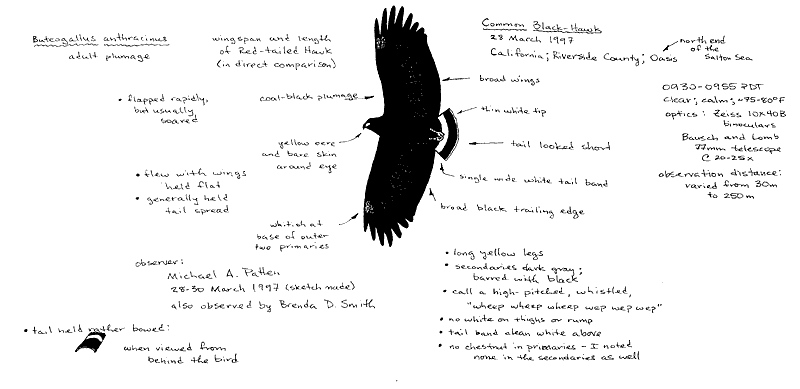

|  |
| Figure 3. Common Black-Hawk, Buteogallus
anthracinus (1997-070), Oasis, N end of Salton Sea,
Riverside County, 28 Mar 1997. Second California record;
one of very few species accepted for the state without
photographic documentation. Sketch by Michael A. Patten |